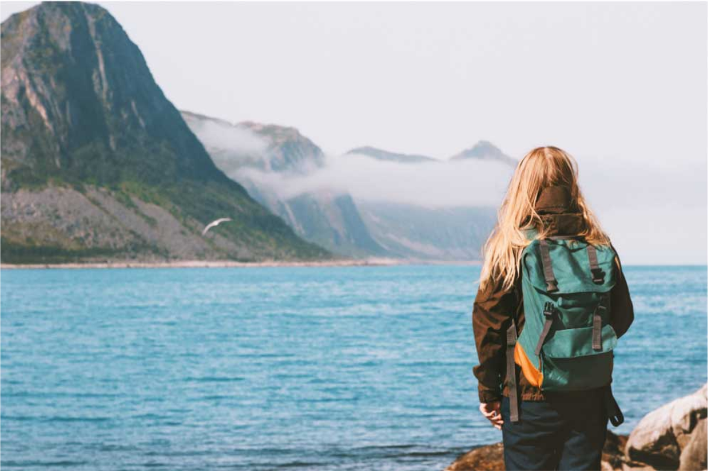
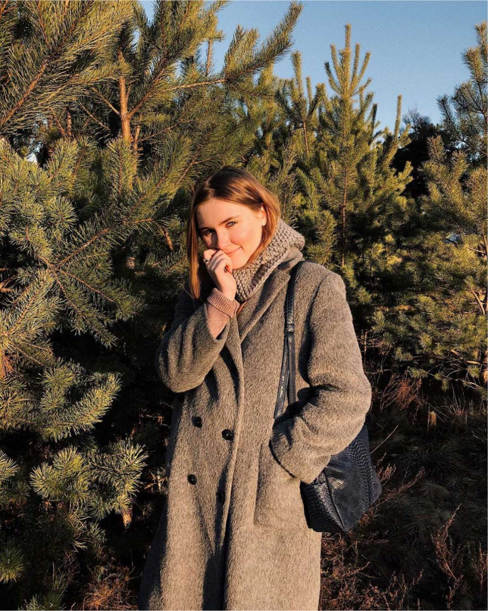
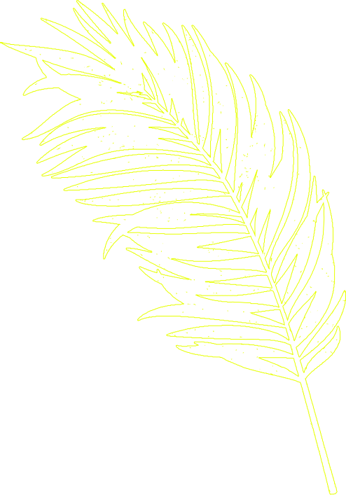
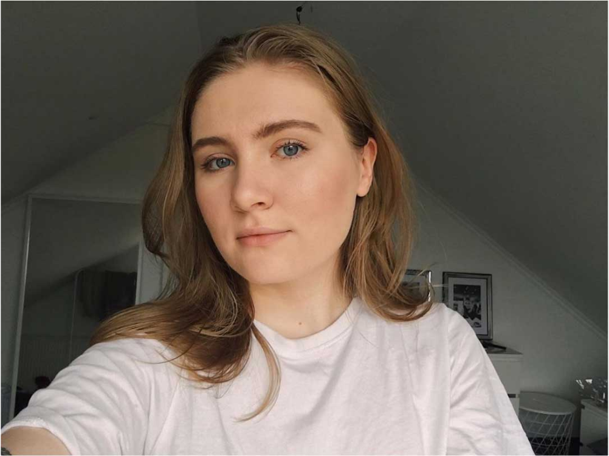
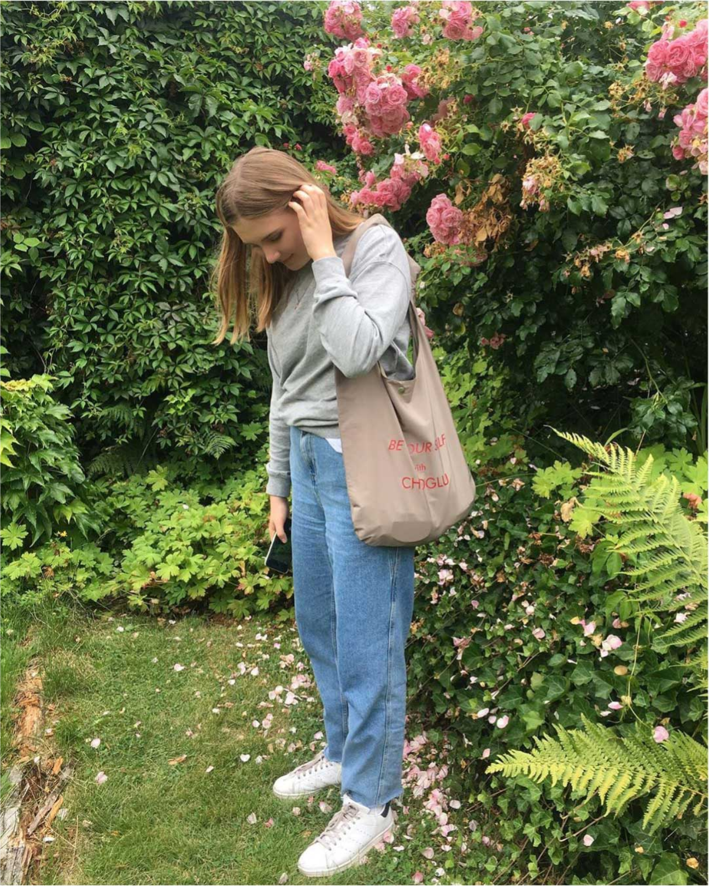
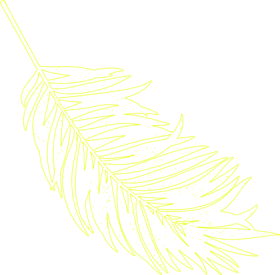
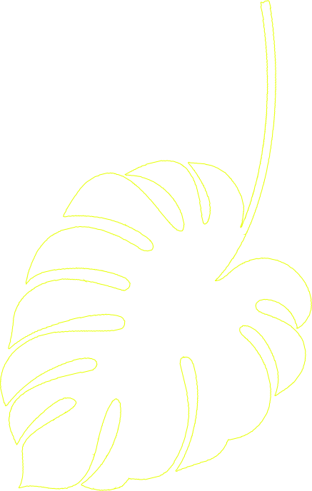

Один в поле воинкак дела одного человека влияют на всю планету?


Даже маленький шаг может изменить нашу жизнь и сделать мир вокруг нас добрее и комфортнее. DANONE и WOMAN.RU
расскажут вам истории самых разных людей и одной компании, дела которых сделали общество и экологию чуть
лучше. Вдохновитесь ими вместе с нами и сделайте свой шаг навстречу устойчивому развитию нашего мира.
1
Зеленые городаАлина Антипова
блогер, адепт осознанного образа жизни и эко-привычек, главред журнала Touch Catching
Свой путь к экоосознанности лучше начинать постепенно. Я начала как многие – с раздельного сбора отходов.
Сложнее всего было разобраться, где же в моем городе принимают отходы, что туда можно и нельзя сдавать, как на
одной кухне уместить контейнеры и для пластика, и для макулатуры, и для аллюминия, и для стекла… Но ничего,
тихим сапом я помониторила интернет, изучила памятки в экоблогах и отправилась в Ikea, где купила обычные
контейнеры. Теперь раз в две недели сдаю то, что собрали всей семьей. Оказывается, если приложить немного
усилий и запастись терпением, даже в маленьком городе можно встать на путь экоосознанности!


Переработка — не решение основной мусорной проблемы. Важно сократить потребление и постараться
использовать многоразовые товары: брать с собой многоразовую бутылку и чашку для кофе, ходить в магазин с
сумкой-шоппером и специальными мешочками для фруктов/овощей.
Позже только раздельного сбора мне стало мало и я начала сортировать органику на даче.В городе это, конечно, тяжело сделать – ведь ее надо закапывать в парках и лесах, сушить и замораживать...
Здорово, если в этом помогают власти или такие же экоальтруисты – вот в Питере, например, начали принимать
органику на переработку, но так далеко не везде… Зато я придумала свой способ борьбы с такими отходами - сажаю
косточки от авокадо, яблок, слив, фиников и выращиваю из них растения, которые летом будут красоваться на
даче. Кстати выращиваю прямо в пластиковых баночках от йогуртов! Как шутят родители – у нас не дом, а
настоящее безотходное производство!

Алина
Удивляюсь, когда мне говорят, что один экоосознанный человек прланете не поможет. Пффф, все
мы можем делать больше, чем думаем! Людям небезразлично, где они живут, каким воздухом дышат, что потребляют,
поэтому теперь мы сортируем мусор, отказываемся от одноразовых предметов, используем вещи повторно, ходим в
экомагазины, становимся членами экоорганизаций. Сегодня быть примером для других и создавать что-то новое во
благо природы – очень модно. Правда, как я и говорила, без помощи государства и тем более – компаний – с места
не сдвинуться! В Германии, например, людей стимулируют штрафы (за неправильное избавление от бытового мусора –
1000 евро, а это около 70 тысяч руб.) и стоимость пакетов – они везде платные. Но, думаю, и мы скоро догоним
Европу!

Антипова

Инициатива Danone
Разделять мусор дома – уже мало, пришла пора действовать в глобальных масштабах! Danone не
просто собирает
и перерабатывает пластик в своих офисах и на производстве (с 2017 года было передано более 24 000 тонн отходов
потребительской упаковки), а создает в России настоящие «Зеленые города»! В Чехове, Липецке, Екатеринбурге и
Кемерово внедряется инновационная инфраструктура для сбора и переработки пластика, чтобы ежегодно собирать
более 4 тысяч тонн упаковочных отходов, что позволит сократить углеродный след CO2 почти на три тысячи тонн.
Запуск этой системы предоставит новые возможности для более шести тысяч студентов и выпускников
профессиональных училищ в индустрии переработки отходов.
Конечно, двигать такую махину как сознание людей, одной нелегко. Меня поддерживают мои родные
и близкие – они рассказывают обо мне и моем блоге другим, помогают с сортировкой, хотя сами еще недавно
принимали мою идеологию с осуждением. Но я не привыкла отступать! Просто и доступно я объясняла им свою
позицию, почему это так важно и какие результаты принесет. А когда показала видео из пресс-тура на заводе по
производству полимеров и вторичных полимеров – скажем так, это зрелище не для слабонервных - все стало на свои
места – они теперь в моей команде! Быть экологичным – это признавать свою неидеальность в первую очередь и делать то, что тебе
по силам.
